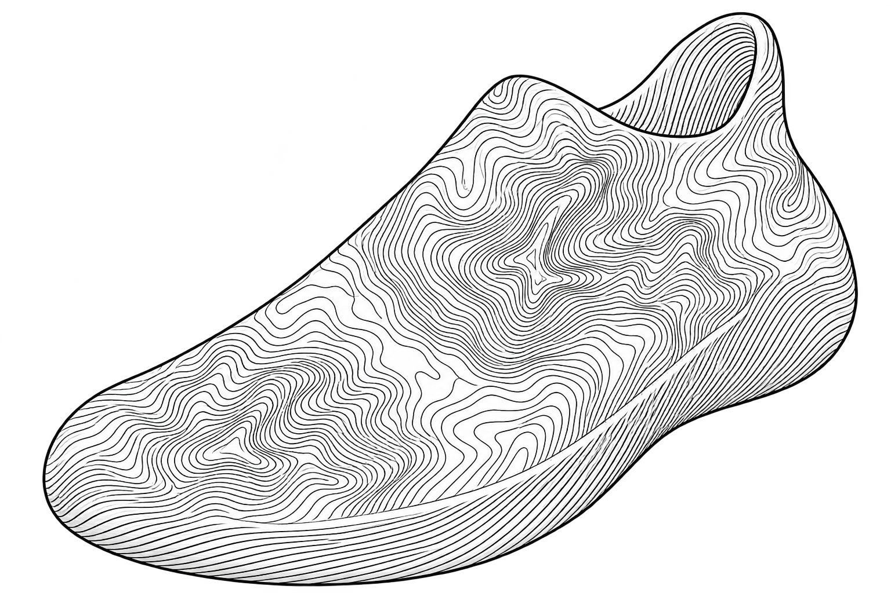

Finally, something you can throw away without guilt.
Made from recycled and bio-based materials, designed to return to the earth when you're done. Affordable for everyone, kind to the planet.
Explore moreThe Problem
Every year, over 24 billion pairs of shoes are made, and about 90% end up in landfills, where they can take 500+ years to break down. Most are built from petroleum-based materials that never return to nature. Biodegradable alternatives do exist, but their high prices push most buyers back to cheap synthetic pairs. The result: the people who want to choose better often can't.
Pairs of shoes made
worldwide every year
Of those shoes end up in landfill
Years a conventional shoe can
take to break down
Our Approach
Mission
We believe sustainable living shouldn't be a privilege. Parroto exists to make eco-friendly footwear truly affordable, so everyone, especially students and young adults, can choose the planet without compromise. By turning waste into resource and designing for scale, we're making the sustainable choice the easy choice.